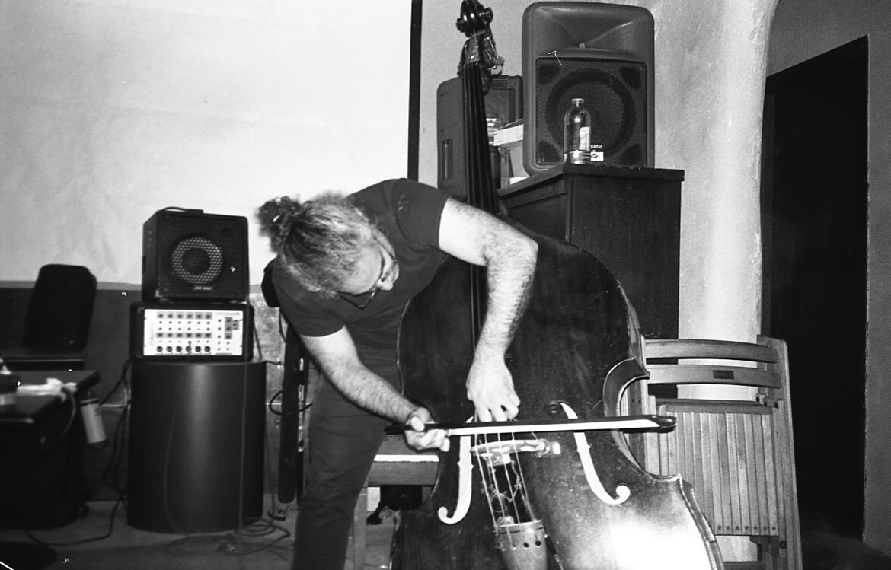

https://elinamay.bandcamp.com/
sound is abundant. scarcity is manufactured.
from a lebanese/syrian immigrant community in charleston, WV, eli makes sound, often w/ a bass, in many different ways w/ many different people,
and researches social-emotional experience facilitated by participatory creative and improvised music making. they have been active with v
arious creative music communities as well as egalitarian and abolitionist formations for ~20 years, in WV, Chicago, and Pgh.